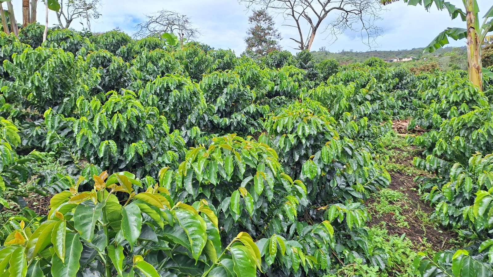

Descubre Ser Café, un café de origen único cultivado a 1.978 msnm (metros sobre el nivel del mar) en La Florida, Nariño. Una experiencia de sabor con notas de chocolate, caramelo y una acidez cítrica brillante.

En el corazón de Nariño, en la Finca Lucitania, cultivamos con pasión nuestro café variedad Castillo sur. El proceso de lavado y el secado al sol preservan la pureza de cada grano.
Cada detalle cuenta para ofrecerte una taza perfecta. Conoce las características que hacen único a Ser Café.